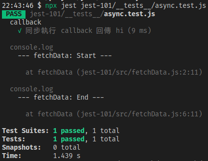
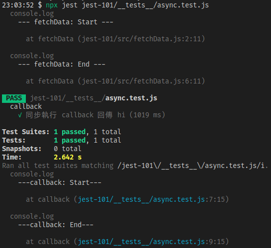
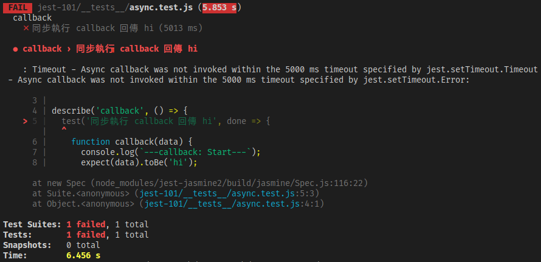

<!DOCTYPE html><html><head><meta charset="utf-8"><title>Jest：非同步測試 | Titangene Blog</title><meta http-equiv="X-UA-Compatible" content="IE=edge"><meta name="viewport" content="width=device-width,initial-scale=1,maximum-scale=1"><meta name="HandheldFriendly" content="True"><meta name="apple-mobile-web-app-capable" content="yes"><meta name="author" content="Titangene"><link rel="shortcut icon" href="/favicon.ico"><link rel="alternate" href="/atom.xml" title="Titangene Blog"><meta name="description" content="處理 JS 非同步的常見作法包括 callback、ES6 的 Promise 以及 ES7 的 async 和 await，而本篇會分別說明如何在 Jest 使用這些 JS 特性來測試非同步程式碼。"><meta property="og:type" content="article"><meta property="og:title" content="Jest：非同步測試"><meta property="og:url" content="https://titangene.github.io/article/jest-async-test.html"><meta property="og:site_name" content="Titangene Blog"><meta property="og:description" content="處理 JS 非同步的常見作法包括 callback、ES6 的 Promise 以及 ES7 的 async 和 await，而本篇會分別說明如何在 Jest 使用這些 JS 特性來測試非同步程式碼。"><meta property="og:locale" content="zh_TW"><meta property="og:image" content="https://titangene.github.io/images/cover/jest.jpg"><meta property="article:published_time" content="2020-06-28T15:56:32.000Z"><meta property="article:modified_time" content="2020-06-28T15:59:53.353Z"><meta property="article:author" content="Titangene"><meta property="article:tag" content="w3HexSchool"><meta property="article:tag" content="Jest"><meta property="article:tag" content="JavaScript"><meta property="article:tag" content="Unit Testing"><meta property="article:tag" content="async"><meta property="article:tag" content="promise"><meta property="article:tag" content="callback"><meta name="twitter:card" content="summary_large_image"><meta name="twitter:image" content="https://titangene.github.io/images/cover/jest.jpg"><meta name="twitter:creator" content="@titangeneTW"><meta name="twitter:site" content="@titangene_blog"><meta property="fb:admins" content="100001106016019"><meta property="fb:app_id" content="2470546159839111"><meta property="og:image:width" content="1200"><meta property="og:image:height" content="630"><meta name="google-site-verification" content="AaJ39L7h-nWwJjXJMhAMtXSF6H6BUgGWXC80kYvLic8"><link href="https://fonts.googleapis.com/css2?family=Roboto&display=swap" rel="stylesheet"><link href="https://fonts.googleapis.com/css?family=Source+Code+Pro&display=swap" rel="stylesheet"><link rel="stylesheet" href="https://cdnjs.cloudflare.com/ajax/libs/font-awesome/5.13.0/css/all.min.css"><link rel="stylesheet" href="https://unpkg.com/gitalk/dist/gitalk.css"><link rel="stylesheet" href="/style.css"><script async src="https://www.googletagmanager.com/gtag/js?id=UA-129758206-1"></script><script>!function(a){function n(){dataLayer.push(arguments)}a.dataLayer=a.dataLayer||[],n("js",new Date),n("config","UA-129758206-1")}(window)</script><script>function setLoadingBarProgress(e){document.getElementById("loading-bar").style.width=e+"%"}</script><meta name="generator" content="Hexo 4.2.0"><link rel="alternate" href="/atom.xml" title="Titangene Blog" type="application/atom+xml"></head></html><body><div id="loading-bar-wrapper"><div id="loading-bar"></div></div><script>setLoadingBarProgress(20)</script><header class="l_header"><div class="wrapper"><div class="nav-main container container--flex"><a class="logo flat-box" href="/">Titangene Blog</a><div class="menu"><ul class="h-list"><li><a class="flat-box nav-home" href="/">Home</a></li><li><a class="flat-box nav-archives" href="/archives">Archives</a></li></ul><div class="underline"></div></div><div class="m_search"><form name="searchform" class="form u-search-form"><input type="text" class="input u-search-input" placeholder="Search"> <i class="fas fa-search"></i></form></div><ul class="switcher h-list"><li class="s-search"><a class="fas fa-search" href="javascript:void(0)"></a></li><li class="s-menu"><a class="fas fa-bars" href="javascript:void(0)"></a></li></ul></div><div class="nav-sub container container--flex"><a class="logo flat-box" href="/">Titangene Blog</a><ul class="switcher h-list"><li class="s-comment"><a class="far fa-comment-alt" href="javascript:void(0)"></a></li><li class="s-top"><a class="fas fa-arrow-up" href="javascript:void(0)"></a></li><li class="s-toc"><a class="fas fa-list-ol" href="javascript:void(0)"></a></li></ul></div></div></header><aside class="menu-phone"><nav><a href="/" class="nav-home nav">Home </a><a href="/archives" class="nav-archives nav">Archives</a></nav></aside><script>setLoadingBarProgress(40)</script><div class="l_body"><div class="container clearfix"><div class="l_main"><article id="post-jest-async-test" class="post white-box article-type-post" itemscope itemprop="blogPost"><section class="meta"><h2 class="title"><a href="/article/jest-async-test.html">Jest：非同步測試</a></h2><span class="post-time"><span class="post-meta-item-icon"><i class="fa fa-calendar"></i> </span><span class="post-meta-item-text">發表於</span> <time title="建立時間：2020-06-28 23:56:32" itemprop="dateCreated datePublished" datetime="2020-06-28T23:56:32+08:00">2020-06-28 </time><span class="post-meta-divider">|</span> <span class="post-meta-item-icon"><i class="fa fa-calendar-check"></i> </span><span class="post-meta-item-text">更新於</span> <time title="修改時間：2020-06-28 23:59:53" itemprop="dateModified" datetime="2020-06-28T23:59:53+08:00">2020-06-28</time></span> <span class="comments-count"><span class="post-meta-divider">|</span> <span class="post-meta-item-icon"><i class="fas fa-comment"></i> </span><a href="https://titangene.github.io/article/jest-async-test.html#comments" class="article-comment-count">留言</a></span><div class="post-category"><span class="post-meta-item-icon"><i class="fa fa-folder"></i> </span><span class="post-meta-item-text">分類於</span> <span itemprop="about" itemscope itemtype="http://schema.org/Thing"><a href="/categories/testing/" itemprop="url" rel="index"><span itemprop="name">Testing</span></a></span></div></section><section class="toc-wrapper"><h3>目錄</h3><ol class="toc"><li class="toc-item toc-level-2"><a class="toc-link" href="#Callbacks"><span class="toc-text">Callbacks</span></a></li><li class="toc-item toc-level-2"><a class="toc-link" href="#Promise"><span class="toc-text">Promise</span></a></li><li class="toc-item toc-level-2"><a class="toc-link" href="#resolves-rejects"><span class="toc-text">.resolves &#x2F; .rejects</span></a></li><li class="toc-item toc-level-2"><a class="toc-link" href="#Async-Await"><span class="toc-text">Async&#x2F;Await</span></a></li></ol></section><section class="article typo"><div class="article-entry" itemprop="articleBody"><p></p><p>處理 JS 非同步的常見作法包括 callback、ES6 的 <code>Promise</code> 以及 ES7 的 <code>async</code> 和 <code>await</code>，而本篇會分別說明如何在 Jest 使用這些 JS 特性來測試非同步程式碼。</p><a id="more"></a><blockquote><p>其他 Jest 相關文章可參閱 <a href="https://titangene.github.io/tags/jest/">Jest 系列文章</a>。</p></blockquote><h2 id="Callbacks"><a class="header-anchor" href="#Callbacks"></a>Callbacks</h2><p>假設你要測下面這個函數，我使用 <code>setTimeout</code> 來模擬發 API 需要花一段時間，若 API 發送成功就會呼叫你傳入的 callback 函數，在呼叫 callback 時會傳入 <code>'hi'</code>，代表從 API 拿到的資料：</p><figure class="highlight javascript"><table><tr><td class="gutter"><pre><span class="line">1</span><br><span class="line">2</span><br><span class="line">3</span><br><span class="line">4</span><br><span class="line">5</span><br><span class="line">6</span><br><span class="line">7</span><br><span class="line">8</span><br><span class="line">9</span><br><span class="line">10</span><br></pre></td><td class="code"><pre><code class="hljs javascript"><span class="hljs-comment">// src/fetchData.js</span><br><span class="hljs-function"><span class="hljs-keyword">function</span> <span class="hljs-title">fetchData</span>(<span class="hljs-params">callback</span>) </span>&#123;<br>  <span class="hljs-built_in">console</span>.log(<span class="hljs-string">`--- fetchData: Start ---`</span>);<br>  setTimeout(<span class="hljs-function"><span class="hljs-params">()</span> =&gt;</span> &#123;<br>    callback(<span class="hljs-string">'hi'</span>);<br>  &#125;, <span class="hljs-number">1000</span>);<br>  <span class="hljs-built_in">console</span>.log(<span class="hljs-string">`--- fetchData: End ---`</span>);<br>&#125;<br><br><span class="hljs-keyword">export</span> <span class="hljs-keyword">default</span> fetchData;<br></code></pre></td></tr></table></figure><p>而我們要測試的就是呼叫 <code>fetchData()</code> 所傳入的 callback 有無正確的呼叫，並且傳入 callback 的資料是否為 <code>&quot;hi&quot;</code>。也許你會這樣寫測試：</p><figure class="highlight javascript"><table><tr><td class="gutter"><pre><span class="line">1</span><br><span class="line">2</span><br><span class="line">3</span><br><span class="line">4</span><br><span class="line">5</span><br><span class="line">6</span><br><span class="line">7</span><br><span class="line">8</span><br><span class="line">9</span><br><span class="line">10</span><br><span class="line">11</span><br><span class="line">12</span><br></pre></td><td class="code"><pre><code class="hljs javascript"><span class="hljs-comment">// __tests__/async.test.js</span><br><span class="hljs-keyword">import</span> fetchData <span class="hljs-keyword">from</span> <span class="hljs-string">'../src/async'</span>;<br><br>test(<span class="hljs-string">'同步執行 callback 回傳 hi'</span>, () =&gt; &#123;<br>  <span class="hljs-function"><span class="hljs-keyword">function</span> <span class="hljs-title">callback</span>(<span class="hljs-params">data</span>) </span>&#123;<br>    <span class="hljs-built_in">console</span>.log(<span class="hljs-string">`---callback: Start---`</span>);<br>    expect(data).toBe(<span class="hljs-string">'hi'</span>);<br>    <span class="hljs-built_in">console</span>.log(<span class="hljs-string">`---callback: End---`</span>);<br>  &#125;<br><br>  fetchData(callback);<br>&#125;);<br></code></pre></td></tr></table></figure><p>執行測試後，測試通過了，但感覺怪怪的！為什麼測試內的 <code>callback()</code> 沒有執行到？</p><p></p><p>因為 Jest 測試只要跑到最後一行的 <code>fetchData(..)</code> 就會結束，裡面執行的非同步處理 (即模擬發 API 的 <code>setTimeout</code> ) 根本還沒處理完，Jest 測試就會在 callback 呼叫之前就結束了。</p><p>Jest 提供一種建議：使用 <code>test()</code> 時不要用 empty argument，而是用名為 <code>done</code> 的 argument。Jest 就會等到 <code>done</code> callback 被呼叫時才會結束測試。這樣就能確保測試是在你決定的地方結束 ( <code>done</code>，雙關)：</p><figure class="highlight javascript"><table><tr><td class="gutter"><pre><span class="line">1</span><br><span class="line">2</span><br><span class="line">3</span><br><span class="line">4</span><br><span class="line">5</span><br><span class="line">6</span><br><span class="line">7</span><br><span class="line">8</span><br><span class="line">9</span><br><span class="line">10</span><br><span class="line">11</span><br><span class="line">12</span><br><span class="line">13</span><br></pre></td><td class="code"><pre><code class="hljs javascript"><span class="hljs-comment">// __tests__/async.test.js</span><br><span class="hljs-keyword">import</span> fetchData <span class="hljs-keyword">from</span> <span class="hljs-string">'../src/async'</span>;<br><br>test(<span class="hljs-string">'非同步執行 callback 回傳 hi'</span>, done =&gt; &#123;<br>  <span class="hljs-function"><span class="hljs-keyword">function</span> <span class="hljs-title">callback</span>(<span class="hljs-params">data</span>) </span>&#123;<br>    <span class="hljs-built_in">console</span>.log(<span class="hljs-string">`---callback: Start---`</span>);<br>    expect(data).toBe(<span class="hljs-string">'hi'</span>);<br>    <span class="hljs-built_in">console</span>.log(<span class="hljs-string">`---callback: End---`</span>);<br>    done();<br>  &#125;<br><br>  fetchData(callback);<br>&#125;);<br></code></pre></td></tr></table></figure><p></p><p>若 <code>test()</code> 使用了 <code>done</code> argument，但沒有呼叫 <code>done()</code>，測試就會失敗 (帶有 timeout error)：</p><p></p><div class="info"><p>錯誤訊息是說這個測試沒有在 timeout 內 invoke 非同步的 callback。</p><p>至於 timeout 的時間預設為 5 秒，若要自訂 <code>test()</code> 的 timeout，可自行加上第三個 arg (單位為豪秒)。像下面是自訂 timeout 為 3 秒：</p><figure class="highlight javascript"><table><tr><td class="gutter"><pre><span class="line">1</span><br><span class="line">2</span><br><span class="line">3</span><br></pre></td><td class="code"><pre><code class="hljs javascript">test(<span class="hljs-string">'test name'</span>, () =&gt; &#123;<br>  <span class="hljs-comment">// some test code...</span><br>&#125;, <span class="hljs-number">3000</span>);<br></code></pre></td></tr></table></figure><blockquote><p>詳情可參閱 <a href="https://titangene.github.io/article/jest-describe-test-case.html#test-name-fn-timeout">Jest：Describe &amp; Test case</a> 的「<code>test(name, fn, timeout)</code>」段落。</p></blockquote></div><p>如果 <code>expect</code> 陳述句失敗，就會拋出錯誤，並且不會呼叫 <code>done()</code>。若想在測試輸出結果看到失敗的原因，就要用 <code>try</code> 區塊把 <code>expect</code> 包起來，並在 <code>catch</code> 區塊中接收錯誤。</p><figure class="highlight javascript"><table><tr><td class="gutter"><pre><span class="line">1</span><br><span class="line">2</span><br><span class="line">3</span><br><span class="line">4</span><br><span class="line">5</span><br><span class="line">6</span><br><span class="line">7</span><br><span class="line">8</span><br><span class="line">9</span><br><span class="line">10</span><br><span class="line">11</span><br><span class="line">12</span><br><span class="line">13</span><br><span class="line">14</span><br><span class="line">15</span><br><span class="line">16</span><br><span class="line">17</span><br></pre></td><td class="code"><pre><code class="hljs javascript"><span class="hljs-comment">// __tests__/async.test.js</span><br><span class="hljs-keyword">import</span> fetchData <span class="hljs-keyword">from</span> <span class="hljs-string">'../src/async'</span>;<br><br>test(<span class="hljs-string">'非同步執行 callback 回傳 hi'</span>, done =&gt; &#123;<br>  <span class="hljs-function"><span class="hljs-keyword">function</span> <span class="hljs-title">callback</span>(<span class="hljs-params">data</span>) </span>&#123;<br>    <span class="hljs-keyword">try</span> &#123;<br>      <span class="hljs-built_in">console</span>.log(<span class="hljs-string">`---callback: Start---`</span>);<br>      expect(data).toBe(<span class="hljs-string">'hi~~~'</span>);<br>      <span class="hljs-built_in">console</span>.log(<span class="hljs-string">`---callback: End---`</span>);<br>      done();<br>    &#125; <span class="hljs-keyword">catch</span> (error) &#123;<br>      done(error);<br>    &#125;<br>  &#125;<br><br>  fetchData(callback);<br>&#125;);<br></code></pre></td></tr></table></figure><h2 id="Promise"><a class="header-anchor" href="#Promise"></a>Promise</h2><p>如果測試回傳一個 promise，Jest 會等待這個 promise 的 resolve。如果 promise 被 reject，測試會自動失敗。</p><p>一定要回傳 promise：如果省略了 <code>return</code> 陳述句，測試會在 <code>promiseFetchData</code> 回傳的 promise 被 resolve，並且 <code>then()</code> 有機會執行 callback 之前完成。</p><p>例如：下面範例的測試不會等到 promise 內的 <code>setTimeout()</code> 跑完就會立即完成測試：</p><figure class="highlight javascript"><table><tr><td class="gutter"><pre><span class="line">1</span><br><span class="line">2</span><br><span class="line">3</span><br><span class="line">4</span><br><span class="line">5</span><br><span class="line">6</span><br><span class="line">7</span><br><span class="line">8</span><br><span class="line">9</span><br><span class="line">10</span><br><span class="line">11</span><br></pre></td><td class="code"><pre><code class="hljs javascript"><span class="hljs-comment">// src/fetchData.js</span><br><span class="hljs-function"><span class="hljs-keyword">function</span> <span class="hljs-title">promiseFetchData</span>(<span class="hljs-params">option</span>) </span>&#123;<br>  <span class="hljs-keyword">return</span> <span class="hljs-keyword">new</span> <span class="hljs-built_in">Promise</span>(<span class="hljs-function">(<span class="hljs-params">resolve, reject</span>) =&gt;</span> &#123;<br>    <span class="hljs-built_in">console</span>.log(<span class="hljs-string">`--- Promise: Start ---`</span>);<br>    setTimeout(<span class="hljs-function"><span class="hljs-params">()</span> =&gt;</span> &#123;<br>      <span class="hljs-keyword">if</span> (option.flag === <span class="hljs-string">'success'</span>) resolve(<span class="hljs-string">'hi'</span>);<br>      <span class="hljs-keyword">if</span> (option.flag === <span class="hljs-string">'fail'</span>) reject(<span class="hljs-string">'error'</span>);<br>    &#125;, <span class="hljs-number">3000</span>);<br>    <span class="hljs-built_in">console</span>.log(<span class="hljs-string">`--- Promise: End ---`</span>);<br>  &#125;);<br>&#125;<br></code></pre></td></tr></table></figure><figure class="highlight javascript"><table><tr><td class="gutter"><pre><span class="line">1</span><br><span class="line">2</span><br><span class="line">3</span><br><span class="line">4</span><br><span class="line">5</span><br><span class="line">6</span><br><span class="line">7</span><br><span class="line">8</span><br><span class="line">9</span><br><span class="line">10</span><br></pre></td><td class="code"><pre><code class="hljs javascript"><span class="hljs-comment">// __tests__/async.test.js</span><br><span class="hljs-keyword">import</span> promiseFetchData <span class="hljs-keyword">from</span> <span class="hljs-string">'../src/fetchData'</span>;<br><br>test(<span class="hljs-string">'回傳的 promise resolve 資料為 hi'</span>, () =&gt; &#123;<br>  <span class="hljs-keyword">return</span> promiseFetchData(&#123; <span class="hljs-attr">flag</span>: <span class="hljs-string">'success'</span> &#125;).then(<span class="hljs-function"><span class="hljs-params">data</span> =&gt;</span> &#123;<br>    <span class="hljs-built_in">console</span>.log(<span class="hljs-string">`--- then: Start ---`</span>);<br>    expect(data).toBe(<span class="hljs-string">'hi'</span>);<br>    <span class="hljs-built_in">console</span>.log(<span class="hljs-string">`--- then: End ---`</span>);<br>  &#125;);<br>&#125;);<br></code></pre></td></tr></table></figure><p>所以如果省略了 <code>return</code> 陳述句，下面範例的 <code>'hi XD'</code> 雖然跟 <code>data</code> 真正拿到的值不同，但測試還是會通過：</p><figure class="highlight javascript"><table><tr><td class="gutter"><pre><span class="line">1</span><br><span class="line">2</span><br><span class="line">3</span><br><span class="line">4</span><br><span class="line">5</span><br><span class="line">6</span><br><span class="line">7</span><br><span class="line">8</span><br><span class="line">9</span><br><span class="line">10</span><br></pre></td><td class="code"><pre><code class="hljs javascript"><span class="hljs-comment">// __tests__/async.test.js</span><br><span class="hljs-keyword">import</span> promiseFetchData <span class="hljs-keyword">from</span> <span class="hljs-string">'../src/fetchData'</span>;<br><br>test(<span class="hljs-string">'回傳的 promise resolve 資料為 hi'</span>, () =&gt; &#123;<br>  promiseFetchData(&#123; <span class="hljs-attr">flag</span>: <span class="hljs-string">'success'</span> &#125;).then(<span class="hljs-function"><span class="hljs-params">data</span> =&gt;</span> &#123;<br>    <span class="hljs-built_in">console</span>.log(<span class="hljs-string">`--- then: Start ---`</span>);<br>    expect(data).toBe(<span class="hljs-string">'hi'</span>);<br>    <span class="hljs-built_in">console</span>.log(<span class="hljs-string">`--- then: End ---`</span>);<br>  &#125;);<br>&#125;);<br></code></pre></td></tr></table></figure><p>若想讓 promise 被 reject，可用 <code>.catch</code> 方法。記得要加上 <code>expect.assertions</code> 來驗證是否呼叫一定數量的 assertions。否則一個 fulfilled promise 不會讓錯誤失敗：</p><figure class="highlight javascript"><table><tr><td class="gutter"><pre><span class="line">1</span><br><span class="line">2</span><br><span class="line">3</span><br><span class="line">4</span><br><span class="line">5</span><br><span class="line">6</span><br><span class="line">7</span><br><span class="line">8</span><br><span class="line">9</span><br><span class="line">10</span><br><span class="line">11</span><br></pre></td><td class="code"><pre><code class="hljs javascript"><span class="hljs-comment">// __tests__/async.test.js</span><br><span class="hljs-keyword">import</span> promiseFetchData <span class="hljs-keyword">from</span> <span class="hljs-string">'../src/fetchData'</span>;<br><br>test(<span class="hljs-string">'promise reject 的錯誤訊息為 error'</span>, () =&gt; &#123;<br>  expect.assertions(<span class="hljs-number">1</span>);<br>  <span class="hljs-keyword">return</span> promiseFetchData(&#123; <span class="hljs-attr">flag</span>: <span class="hljs-string">'fail'</span> &#125;).catch(<span class="hljs-function"><span class="hljs-params">e</span> =&gt;</span> &#123;<br>    <span class="hljs-built_in">console</span>.log(<span class="hljs-string">`--- catch: Start ---`</span>);<br>    expect(e).toMatch(<span class="hljs-string">'error'</span>);<br>    <span class="hljs-built_in">console</span>.log(<span class="hljs-string">`--- catch: End ---`</span>);<br>  &#125;);<br>&#125;);<br></code></pre></td></tr></table></figure><h2 id="resolves-rejects"><a class="header-anchor" href="#resolves-rejects"></a><code>.resolves</code> / <code>.rejects</code></h2><p>也可在 <code>expect</code> 陳述句中使用 <code>.resolves</code> matcher，Jest 會等待 promise 的 resolve。如果 promise 被 reject，測試會自動失敗。</p><figure class="highlight javascript"><table><tr><td class="gutter"><pre><span class="line">1</span><br><span class="line">2</span><br><span class="line">3</span><br><span class="line">4</span><br><span class="line">5</span><br><span class="line">6</span><br></pre></td><td class="code"><pre><code class="hljs javascript"><span class="hljs-comment">// __tests__/async.test.js</span><br><span class="hljs-keyword">import</span> promiseFetchData <span class="hljs-keyword">from</span> <span class="hljs-string">'../src/fetchData'</span>;<br><br>test(<span class="hljs-string">'使用 resolves matcher'</span>, () =&gt; &#123;<br>  <span class="hljs-keyword">return</span> expect(promiseFetchData(&#123; <span class="hljs-attr">flag</span>: <span class="hljs-string">'success'</span> &#125;)).resolves.toBe(<span class="hljs-string">'hi'</span>);<br>&#125;);<br></code></pre></td></tr></table></figure><p>一定要回傳 assertion：如果省略了 <code>return</code> 陳述句，測試會在 <code>promiseFetchData</code> 回傳的 promise 被 resolve，並且 <code>then()</code> 有機會執行 callback 之前完成。</p><p>若想讓 promise 被 reject，可用 <code>.rejects</code> matcher。如果 promise 是 fulfilled，測試就會自動失敗：</p><figure class="highlight javascript"><table><tr><td class="gutter"><pre><span class="line">1</span><br><span class="line">2</span><br><span class="line">3</span><br><span class="line">4</span><br><span class="line">5</span><br><span class="line">6</span><br></pre></td><td class="code"><pre><code class="hljs javascript"><span class="hljs-comment">// __tests__/async.test.js</span><br><span class="hljs-keyword">import</span> promiseFetchData <span class="hljs-keyword">from</span> <span class="hljs-string">'../src/fetchData'</span>;<br><br>test(<span class="hljs-string">'使用 rejects matcher'</span>, () =&gt; &#123;<br>  <span class="hljs-keyword">return</span> expect(promiseFetchData(&#123; <span class="hljs-attr">flag</span>: <span class="hljs-string">'fail'</span> &#125;)).rejects.toMatch(<span class="hljs-string">'error'</span>);<br>&#125;);<br></code></pre></td></tr></table></figure><h2 id="Async-Await"><a class="header-anchor" href="#Async-Await"></a>Async/Await</h2><p>也可用 <code>async</code> 和 <code>await</code>。在傳給測試函數前加上 <code>async</code> 關鍵字：</p><figure class="highlight javascript"><table><tr><td class="gutter"><pre><span class="line">1</span><br><span class="line">2</span><br><span class="line">3</span><br><span class="line">4</span><br><span class="line">5</span><br><span class="line">6</span><br><span class="line">7</span><br><span class="line">8</span><br><span class="line">9</span><br><span class="line">10</span><br><span class="line">11</span><br><span class="line">12</span><br><span class="line">13</span><br><span class="line">14</span><br><span class="line">15</span><br><span class="line">16</span><br></pre></td><td class="code"><pre><code class="hljs javascript"><span class="hljs-comment">// __tests__/async.test.js</span><br><span class="hljs-keyword">import</span> promiseFetchData <span class="hljs-keyword">from</span> <span class="hljs-string">'../src/fetchData'</span>;<br><br>test(<span class="hljs-string">'使用 await resolves'</span>, <span class="hljs-keyword">async</span> () =&gt; &#123;<br>  <span class="hljs-keyword">const</span> data = <span class="hljs-keyword">await</span> promiseFetchData(&#123; <span class="hljs-attr">flag</span>: <span class="hljs-string">'success'</span> &#125;);<br>  expect(data).toBe(<span class="hljs-string">'hi'</span>);<br>&#125;);<br><br>test(<span class="hljs-string">'使用 await rejects'</span>, <span class="hljs-keyword">async</span> () =&gt; &#123;<br>  expect.assertions(<span class="hljs-number">1</span>);<br>  <span class="hljs-keyword">try</span> &#123;<br>    <span class="hljs-keyword">await</span> promiseFetchData(&#123; <span class="hljs-attr">flag</span>: <span class="hljs-string">'fail'</span> &#125;);<br>  &#125; <span class="hljs-keyword">catch</span> (e) &#123;<br>    expect(e).toMatch(<span class="hljs-string">'error'</span>);<br>  &#125;<br>&#125;);<br></code></pre></td></tr></table></figure><p>也可將 <code>async</code> 和 <code>await</code> 與 <code>.resolves</code> 和 <code>.rejects</code> matcher 結合使用：</p><figure class="highlight javascript"><table><tr><td class="gutter"><pre><span class="line">1</span><br><span class="line">2</span><br><span class="line">3</span><br><span class="line">4</span><br><span class="line">5</span><br><span class="line">6</span><br><span class="line">7</span><br><span class="line">8</span><br><span class="line">9</span><br><span class="line">10</span><br></pre></td><td class="code"><pre><code class="hljs javascript"><span class="hljs-comment">// __tests__/async.test.js</span><br><span class="hljs-keyword">import</span> promiseFetchData <span class="hljs-keyword">from</span> <span class="hljs-string">'../src/fetchData'</span>;<br><br>test(<span class="hljs-string">'使用 await 和 resolves matcher'</span>, <span class="hljs-keyword">async</span> () =&gt; &#123;<br>  <span class="hljs-keyword">await</span> expect(promiseFetchData(&#123; <span class="hljs-attr">flag</span>: <span class="hljs-string">'success'</span> &#125;)).resolves.toBe(<span class="hljs-string">'hi'</span>);<br>&#125;);<br><br>test(<span class="hljs-string">'使用 await 和 rejects matcher'</span>, <span class="hljs-keyword">async</span> () =&gt; &#123;<br>  <span class="hljs-keyword">await</span> expect(promiseFetchData(&#123; <span class="hljs-attr">flag</span>: <span class="hljs-string">'fail'</span> &#125;)).rejects.toMatch(<span class="hljs-string">'error'</span>);<br>&#125;);<br></code></pre></td></tr></table></figure><p>資料來源：<a href="https://jestjs.io/docs/en/asynchronous" target="_blank" rel="noopener">Testing Asynchronous Code · Jest</a></p></div><div class="article-tags tags"><a href="/tags/w3hexschool/" title="w3HexSchool">w3HexSchool</a> <a href="/tags/jest/" title="Jest">Jest</a> <a href="/tags/javascript/" title="JavaScript">JavaScript</a> <a href="/tags/unit-testing/" title="Unit Testing">Unit Testing</a> <a href="/tags/async/" title="async">async</a> <a href="/tags/promise/" title="promise">promise</a> <a href="/tags/callback/" title="callback">callback</a></div></section><div class="article-share-links"><span>分享：</span> <a class="fab fa-facebook-f" title="Facebook" target="_blank" href="javascript:window.open('https://www.facebook.com/sharer.php?u=https%3A%2F%2Ftitangene.github.io%2Farticle%2Fjest-async-test.html', 'Share on Facebook','width=600, height=600')"></a> <a class="fab fa-twitter" title="Twitter" target="_blank" href="javascript:window.open('https://twitter.com/share?url=https%3A%2F%2Ftitangene.github.io%2Farticle%2Fjest-async-test.html&amp;text=Jest：非同步測試&amp;hashtags=w3HexSchool,Jest,JavaScript,UnitTesting,async,promise,callback&amp;via=titangene_blog', 'Share on Twitter','width=600, height=260')"></a> <a class="fab fa-linkedin-in" title="Linkedin" target="_blank" href="javascript:window.open('https://www.linkedin.com/shareArticle?mini=true&amp;url=https%3A%2F%2Ftitangene.github.io%2Farticle%2Fjest-async-test.html&amp;title=Jest：非同步測試', 'Share on Linkedin','width=600, height=600')"></a> <a class="fab fa-facebook-messenger" title="Facebook Messenger" target="_blank" href="javascript:window.open('http://www.facebook.com/dialog/send?app_id=2470546159839111&amp;link=https%3A%2F%2Ftitangene.github.io%2Farticle%2Fjest-async-test.html&amp;display=popup&amp;redirect_uri=https%3A%2F%2Fwww.facebook.com%2Fdialog%2Freturn%2Fclose%23_%3D_', 'Send in Messenger','width=600, height=600')"></a> <a class="fab fa-telegram-plane" href="https://telegram.me/share/url?url=https%3A%2F%2Ftitangene.github.io%2Farticle%2Fjest-async-test.html&text=Jest：非同步測試" target="_blank"></a></div><nav id="article-nav"><a href="/article/jest-setup-teardown.html" id="article-nav-prev" class="article-nav-link-wrap" title="Jest：Setup &amp; Teardown" rel="prev"><strong class="article-nav-caption">Prev</strong><p class="article-nav-title">Jest：Setup &amp; Teardown</p><i class="fas fa-angle-left"></i> </a><a href="/article/jest-mock-function.html" id="article-nav-next" class="article-nav-link-wrap" title="Jest：Mock 函數" rel="next"><strong class="article-nav-caption">Next</strong><p class="article-nav-title">Jest：Mock 函數</p><i class="fas fa-angle-right"></i></a></nav><section id="list_related_posts"><h2>相關文章</h2><ul class="related-posts"><li class="related-posts-item"><a class="related-posts-link" href="/article/jest-matcher-assertion.html">Jest：Matcher & Assertion</a><div class="related-posts-item-abstract">Assertion (斷言) 就要測試程式碼的執行結果是否符合預期，如果結果一致，代表測試通過，否則 assertion 就會拋出錯誤，代表測試失敗。而 Jest 提供多種 matcher，能讓你 assert 程式碼執</div></li><li class="related-posts-item"><a class="related-posts-link" href="/article/jest-jquery-dom-testing.html">Jest：DOM 測試 (jQuery)</a><div class="related-posts-item-abstract">若用 Jest 來測試直接操作 DOM 的程式碼，最大好處是不用安裝額外的套件就可以測試，因為 Jest 附帶了 jsdom，它是用來模擬 DOM 環境，讓你很像在瀏覽器上呼叫 DOM API，進而觀察 DOM 的操作是</div></li><li class="related-posts-item"><a class="related-posts-link" href="/article/jest-build-test-env.html">Jest：建置測試環境 (包含 Babel)</a><div class="related-posts-item-abstract">最近在學習單元測試，而 Jest 是在前端蠻常見的測試框架，可透過建立測試來確保自己寫的程式碼是否符合需求，而且當改動程式碼時，才能確保是否因不小心而產生的 bug，測試能讓我更有信心的去重構程式碼。其他 Jest 相關</div></li><li class="related-posts-item"><a class="related-posts-link" href="/article/jest-timer-mocks.html">Jest：Timer Mocks</a><div class="related-posts-item-abstract">常用的 native timer 包括 setTimeout、setInterval、clearTimeout、clearInterval 等，用到這些 timer 的函數可以說是依賴於真實流逝的時間。如果 timer</div></li><li class="related-posts-item"><a class="related-posts-link" href="/article/jest-setup-teardown.html">Jest：Setup & Teardown</a><div class="related-posts-item-abstract">每個測試案例都必須是獨立的，不能互相影響，而解決方法就是讓每個測試在執行前進行重設，或在每個測試結束後清除痕跡。在 Jest，提供 setup 和 teardown 的函數，能讓你自訂在執行 describe 區塊或 t</div></li><li class="related-posts-item"><a class="related-posts-link" href="/article/jest-manual-mocks.html">Jest：Manual Mocks</a><div class="related-posts-item-abstract">manual mock 是用於透過 mock 資料來對功能進行 stub out。例如：若你不想存取網站或 DB 之類的遠端資源，可能需要使用 fake data 來 manual mock 這些功能，以確保可以快速測試</div></li></ul></section><section class="comments" id="comments"><h2>討論區</h2><div id="gitalk-container"></div></section></article><script>window.subData={title:"Jest：非同步測試",tools:!0}</script></div><aside class="l_side"><section class="m_widget about"><div class="avatar-section"><style>.avatar-cover{background:url(/images/avatar_cover.jpg) 0 10%/cover no-repeat}</style><div class="avatar-cover"></div></div><div class="header">Titangene</div><div class="content"><div class="desc">利用 blog 紀錄學習歷程</div></div><div class="content"><meta itemprop="url" content="https://titangene.github.io"><div class="social-wrapper"><a itemprop="sameAs" href="https://github.com/titangene" class="social github" target="_blank" rel="external"><span class="fab fa-github-alt"></span> </a><a itemprop="sameAs" href="https://www.facebook.com/titangene.tw" class="social facebook" target="_blank" rel="external"><span class="fab fa-facebook-square"></span> </a><a itemprop="sameAs" href="https://www.instagram.com/titangene/" class="social instagram" target="_blank" rel="external"><span class="fab fa-instagram"></span> </a><a itemprop="sameAs" href="https://www.flickr.com/photos/titangene" class="social flickr" target="_blank" rel="external"><span class="fab fa-flickr"></span> </a><a itemprop="sameAs" href="/atom.xml" class="social rss" target="_blank" rel="external"><span class="fas fa-rss"></span></a></div></div></section><section class="m_widget facebook_page"><div class="fb-page" data-href="https://www.facebook.com/titangene.blog/" data-width="250" data-small-header="false" data-adapt-container-width="false" data-hide-cover="false" data-show-facepile="true"><blockquote cite="https://www.facebook.com/titangene.blog/" class="fb-xfbml-parse-ignore"><p><a href="https://www.facebook.com/titangene.blog/" class="social facebook" target="_blank"><span class="fab fa-facebook-square"></span></a></p><p><a href="https://www.facebook.com/titangene.blog/" target="_blank" rel="noopener">Titangene Blog</a></p><p>Loading...</p></blockquote></div></section><section class="m_widget recent"><div class="header">Recents</div><div class="content"><ul class="entry"><li><a itemprop="url" class="flat-box" href="/article/recommend-chrome-extension-1.html"><time>2020-08-09</time><div class="name">推薦 Chrome Extension：Markdown &amp; 頁面主題篇</div></a></li><li><a itemprop="url" class="flat-box" href="/article/jest-jquery-dom-testing.html"><time>2020-08-02</time><div class="name">Jest：DOM 測試 (jQuery)</div></a></li><li><a itemprop="url" class="flat-box" href="/article/jest-manual-mocks.html"><time>2020-07-26</time><div class="name">Jest：Manual Mocks</div></a></li><li><a itemprop="url" class="flat-box" href="/article/jest-timer-mocks.html"><time>2020-07-19</time><div class="name">Jest：Timer Mocks</div></a></li><li><a itemprop="url" class="flat-box" href="/article/jest-snapshot-testing.html"><time>2020-07-12</time><div class="name">Jest：Snapshot 測試</div></a></li><li><a itemprop="url" class="flat-box" href="/article/jest-mock-function.html"><time>2020-07-05</time><div class="name">Jest：Mock 函數</div></a></li><li><a itemprop="url" class="flat-box" href="/article/jest-async-test.html"><time>2020-06-28</time><div class="name">Jest：非同步測試</div></a></li></ul></div></section></aside><script>setLoadingBarProgress(60)</script></div></div><footer id="footer" class="clearfix"><div class="social-wrapper"><a href="https://github.com/titangene" class="social github" target="_blank" rel="external"><span class="fab fa-github-alt"></span> </a><a href="https://www.facebook.com/titangene.tw" class="social facebook" target="_blank" rel="external"><span class="fab fa-facebook-square"></span> </a><a href="https://www.instagram.com/titangene/" class="social instagram" target="_blank" rel="external"><span class="fab fa-instagram"></span> </a><a href="https://www.flickr.com/photos/titangene" class="social flickr" target="_blank" rel="external"><span class="fab fa-flickr"></span> </a><a href="/atom.xml" class="social rss" target="_blank" rel="external"><span class="fas fa-rss"></span></a></div><div>© 2018 - 2020 <span itemprop="copyrightHolder">Titangene</span></div><div>Powered by <a href="https://hexo.io/" target="_blank" class="codename" rel="external noopener">Hexo</a> - Theme <a href="https://github.com/stkevintan/hexo-theme-material-flow" target="_blank" class="codename" rel="external noopener">MaterialFlow</a></div><div><a rel="license noopener" href="http://creativecommons.org/licenses/by-nc-sa/4.0/" target="_blank" rel="external noopener"></a></div></footer><script>setLoadingBarProgress(80)</script><script src="//cdnjs.cloudflare.com/ajax/libs/jquery/2.1.4/jquery.min.js"></script><script src="https://cdnjs.cloudflare.com/ajax/libs/clipboard.js/2.0.0/clipboard.min.js"></script><script src="https://unpkg.com/gitalk/dist/gitalk.min.js"></script><script src="/js/jquery.fitvids.js"></script><script>var SEARCH_SERVICE="hexo",ROOT="/";ROOT.endsWith("/")||(ROOT+="/")</script><script src="/js/search.js"></script><script src="/js/app.js"></script><script src="/js/clipboard-use.js"></script><script type="text/javascript">var gitalk=new Gitalk({clientID:"dd1684f31ee17e25c22b",clientSecret:"4b51bb4a5996b04d58821a6e3da8558f23da4cdf",id:window.location.pathname,repo:"hexo-blog",owner:"titangene",admin:"titangene",distractionFreeMode:"true"});gitalk.render("gitalk-container")</script><div id="fb-root"></div><script>window.fbAsyncInit=function(){FB.init({appId:"2470546159839111",autoLogAppEvents:!0,xfbml:!0,version:"v2.11"}),FB.AppEvents.logPageView()},function(e,n,t){var o,s=e.getElementsByTagName(n)[0];e.getElementById(t)||((o=e.createElement(n)).id=t,o.src="//connect.facebook.net/zh_TW/sdk.js",s.parentNode.insertBefore(o,s))}(document,"script","facebook-jssdk")</script><script>setLoadingBarProgress(100)</script></body>